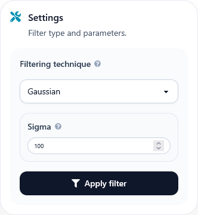
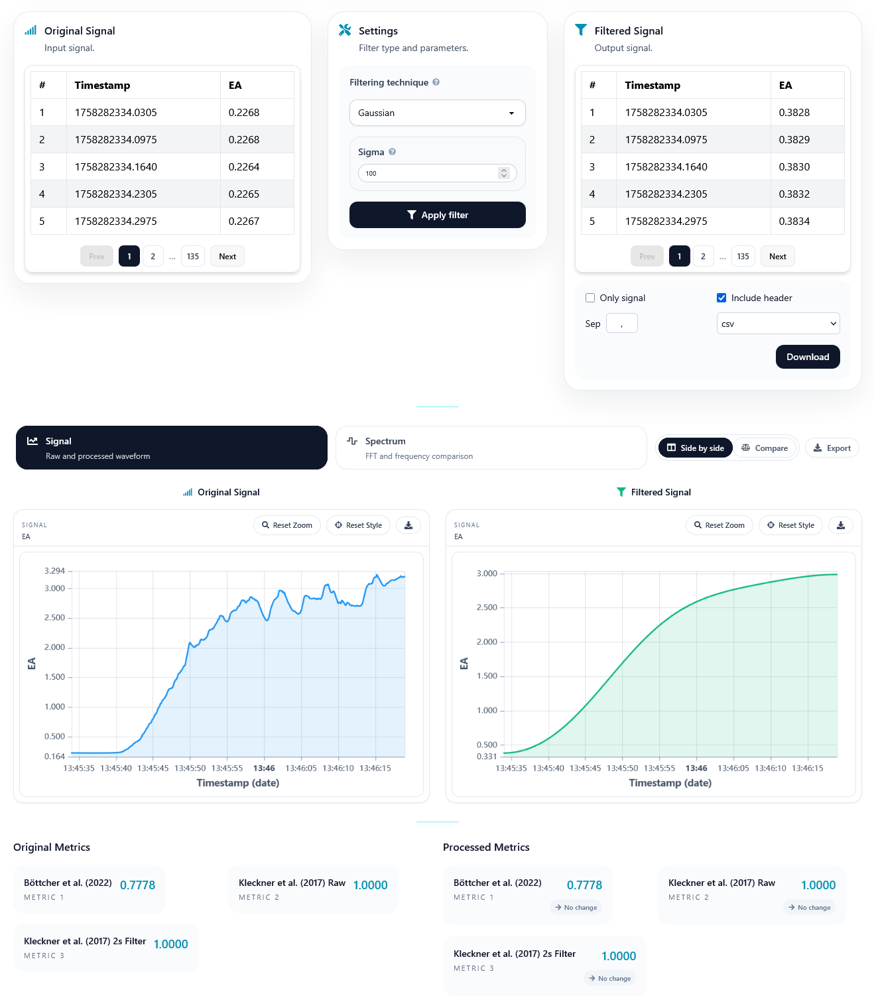

Filtering
Filtering is one of the most common preprocessing operations in physiological signal analysis. It is especially useful for reducing noise and isolating the frequency ranges of interest in signals such as PPG or EDA.
Overview
The Filtering page allows users to apply predefined filters through a graphical interface, while still leaving room for more advanced configurations when needed.
It supports both standard digital filtering techniques and a Python-based mode for users who want to define their own filtering function.
Built-in filters
Several built-in filters are available from the dropdown menu:
Butterworth Filter
The Butterworth filter is a classic IIR (Infinite Impulse Response) filter known for having a maximally flat frequency response in the passband.
Type: IIR
Phase response: Non-linear
Applications: useful for general-purpose filtering when amplitude preservation is important
Properties: smooth roll-off, configurable low-pass, high-pass, and band-pass variants
Bessel Filter
The Bessel filter is designed to preserve waveform shape in the time domain, which makes it useful when phase distortion should be kept low.
Type: IIR
Phase response: Nearly linear
Applications: signals where feature timing matters
Properties: gentle roll-off and good waveform fidelity
FIR (Finite Impulse Response) Filter
FIR filters are stable and well suited to cases where linear phase behaviour is desired.
Type: FIR
Phase response: Linear
Applications: situations where phase preservation is important
Properties: stable behaviour and support for high-order designs
Savitzky-Golay Filter
The Savitzky-Golay filter smooths data by fitting successive subsets with low-degree polynomials.
Type: Smoothing filter
Applications: denoising while preserving local features
Properties: useful when sharp events or peaks should not be overly flattened
Gaussian Filter
The Gaussian filter performs smoothing based on a Gaussian kernel and is useful for soft denoising operations.
Type: Smoothing filter
Applications: quick removal of small fluctuations
Properties: controlled through the sigma parameter
Custom filters
Advanced users can also define their own filtering logic in Python.
To do this:
Select the Python code option.
Paste a function following this format:
def filter_signal(signal): new_values = scipy.ndimage.gaussian_filter1d(signal, sigma=30) return new_values
Make sure the code is well written, with correct indentation.
The function must be named
filter_signal.The input must be a single parameter that represents the signal values.
The output must be a filtered array with the same shape.
If there is a syntax error, an error message will be displayed.
This option is intended for users who need custom behaviour not covered by the predefined filters.
{kind=link}

Interface controls
Filtering technique: dropdown menu to choose the method.
Parameters: input fields to specify cutoffs, order, or other method-specific values.
Execute filter: applies the filter and updates the results displayed in the interface.
Core widgets: the results are displayed using shared charts and spectrum widgets. For more details, refer to Core Widgets.
After execution, the page shows the processed result together with the usual comparison widgets.
{kind=link}

Applications examples
Denoising PPG signals to reduce motion artefacts.
Extracting slow-varying components in EDA.